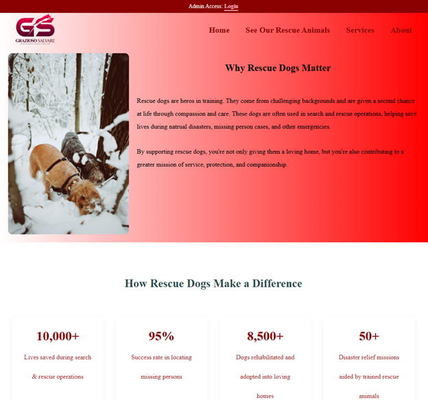

Introduction
I am a passionate and goal-oriented software engineer with a diverse background in application development. My experience spans mobile and web technologies, including developing and publishing Android applications using Java and Android Studio, and building scalable full-stack web applications. I've worked with both the MERN (MongoDB, Express, React, Node.js) and MEAN (MongoDB, Express, Angular, Node.js) stacks, gaining hands-on experience in building RESTful APIs, managing asynchronous data flow, and developing dynamic front-end interfaces.
While I've worked with a range of technologies, I chose to focus this capstone project on the MEAN stack — specifically using Angular, Spring Boot, and MongoDB — to demonstrate a solid understanding of scalable, component-based design and secure backend development. The project is a transformation of a Java-based command-line rescue animal management system into a fully-featured web application. It reflects my ability to apply modern software design principles, implement secure authentication, and structure a project using modular architecture.
This ePortfolio highlights enhancements made in three core categories: Software Design and Engineering, Algorithms and Data Structures, and Databases. These enhancements showcase not only my technical growth throughout the Computer Science program, but also my ability to learn new technologies, solve real-world problems, and build solutions that are efficient, maintainable, and user-focused.
I encourage you to begin with a Code Review walkthrough of the original application, where I explain the evolution from a command-line Java program to a full-stack web application. If you're more interested in backend architecture and design principles, explore the Software Engineering and Design section, which highlights how I implemented secure APIs, followed design patterns, and refactored the codebase. For insights into logic and performance, head over to the Algorithms and Data Structures section, where I demonstrate filtering, sorting, and optimization techniques. Finally, the Databases section focuses on my use of MongoDB for dynamic schema design and efficient querying. Each section offers a focused lens on a different technical area, allowing you to explore the skills and enhancements.
Code Review
A code review is a systematic process in which developers examine each other's code to identify bugs, improve code quality, and ensure that the codebase meets industry standards. It promotes collaboration, encourages learning, and helps catch issues early before they become costly problems in production. Code reviews are an essential part of professional software development workflows, used in both open-source and enterprise teams.
The benefits of a code review include improved readability, better maintainability, consistency in coding style, and increased overall reliability of software. It also serves as an opportunity for knowledge sharing and mentoring, making teams more resilient and aligned in their practices.
In the video below, I walk through the original version of my Rescue Animal Management System, a Java-based console program. I then explain the structured enhancements I implemented as part of my CS 499 Capstone Project. These enhancements showcase my skills in software engineering, algorithm design, and full-stack web development using Angular, Spring Boot, and MongoDB. I highlight specific code improvements, architectural decisions, and technical challenges I solved during the transformation of the system into a web application.
Key Enhancements
- Redesigned the UI using Angular for a modern, responsive interface
- Implemented advanced filtering, sorting, and pagination logic
- Integrated a secure RESTful API with Spring Boot and JWT-based authentication
- Utilized MongoDB to store and query dynamic animal data efficiently
Category 1: Software Engineering and Design
The artifact I selected for enhancement is my Rescue Animal Management System, originally developed as a Java-based console application for the IT-145 course. The program allowed users to intake, reserve, and list rescue dogs and monkeys, storing animal data in memory using ArrayList. While it worked for a console environment, it was very limited. It had no real database, no user interface, and no way to use the application outside of development environments.

For this course, I chose to significantly enhance this artifact by transforming it into a full-stack web application using Spring Boot (Java) for the backend, MongoDB for the database, and Angular for the frontend. The result is a fully interactive and responsive application where users can view, filter, and manage rescue animals through a modern web interface.


I chose to include this artifact in my ePortfolio because it showcases both my growth and current capabilities in software design, full-stack development, RESTful APIs, and database management. The project brings together everything I've learned about frontend design, backend development, database storage, and application security. I built a secure backend with Spring Boot that exposes REST API endpoints.


I connected that to an Angular frontend where users can interact with the data. I also added a login system that uses JWT (JSON Web Tokens) and encrypted
passwords with BCrypt so only admins can make changes to the animal list.
 I changed the code so that dogs and monkeys are now handled through one flexible Animal class,
which makes the project easier to expand if we want to add more animals in the future.
I changed the code so that dogs and monkeys are now handled through one flexible Animal class,
which makes the project easier to expand if we want to add more animals in the future.
The artifact directly supports the course outcome related to software engineering, software design, and databases. It shows that I can build an organized, layered backend, interact with a database, and create a frontend that communicates securely with the backend. I followed the enhancement plan I submitted earlier in the course and have completed the upgrades as planned, so there are no changes needed to my plan. I also made progress on outcomes relating to secure development practices.
Working on this project taught me a lot about how real applications are built. I learned how to connect the frontend and backend through API calls and how to send and verify JWT tokens to protect certain features. I learned how to handle CORS issues, how to upload and display images using Angular and Spring Boot, and how to make the user interface more compact and organized. It wasn't as easy as I thought it would be. One of the biggest challenges I faced was getting the authentication system to work properly and making sure that only admins could perform certain actions. I also had trouble at first getting images to upload and display correctly from the database but eventually solved the problem by improving how the data was stored and retrieved. As I made progress, I also spent time cleaning up the frontend layout to reduce spacing and improve the look and feel of the animal cards.
This enhancement turned a basic, text-based Java program into a complete, real-world application that could actually be used by a rescue organization. It demonstrates my skills in full-stack development, software design, and secure coding. More importantly, it shows my ability to take something simple and build it into something much more powerful and user-friendly. That's why I'm proud to include this project in my ePortfolio as a reflection of my skills, my growth, and my ability to deliver professional-quality work.
